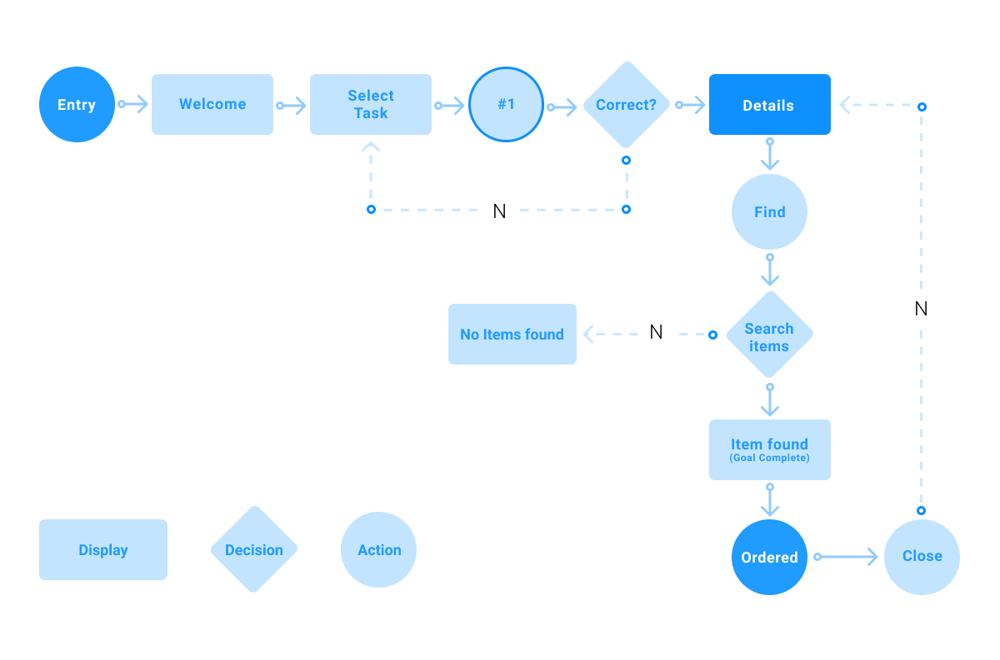
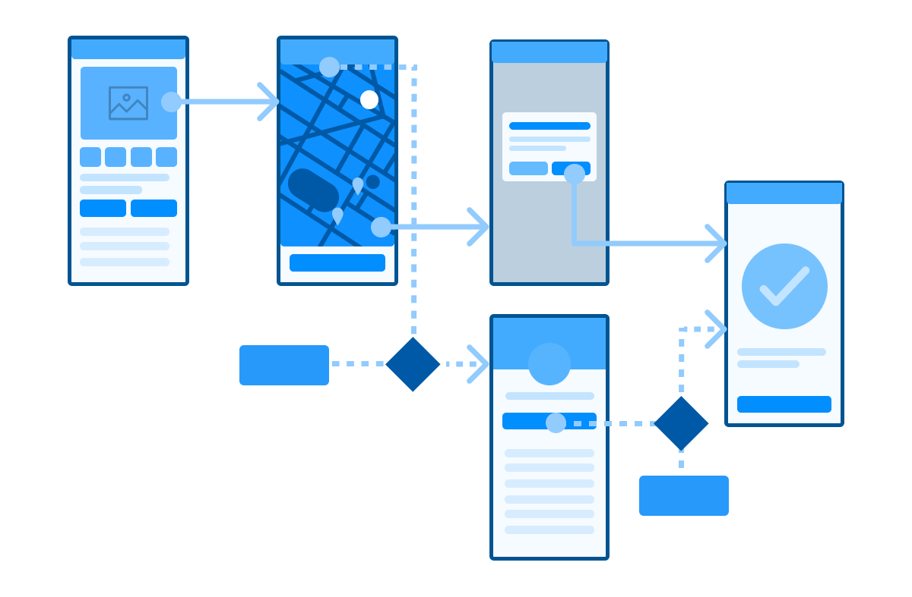

To create amazing experiences focus on the following three categories: Brilliant Basics, Iconic Moves & Extended Experience.
Brilliant Basics - do what everyone else does, but better.
Iconic Moves - create ideas that will become iconic and define the future for the segment.
Extended Expereince - extend beyond the core experience to leverage synergies of other experience / platforms.
As a [user group]
I need / want / expect to… [what does the user want to do?]
So that… [why does the user want to do this?]
User Stories are the needs that a user has of a product or service, and that a product or service must satisfy for the user to get the right outcome for their task.
Group and prioritise user stories and needs via this 2 hour workshop.
MIRO User Story Map Template ↗User story mapping is an Agile approach for feature planning.
WIP - Update to match best practise
A boilerplate structure for creation of a set of user stories.
By using creative ideation, you can explore many options which solve unmet user needs or stories. This is best done in a team of 2 or more people, but if resources are light, only review and discussion of ideas can be done in a group.
Brainstorming can take different forms depending on the scale of solution you are looking for:
Ideation methods, like the ones listed on the untools.co website below, will help any stage of brainstorming and ideation, as they help you apporach the issues from different viewpoints and mental models.
Ideation methods: untools.co - Tools for better thinking ↗
Collection of thinking tools and frameworks to help you solve problems, make decisions and understand systems.
Brainstorming techniques and frameworks you can try on your own or with your remote team.
MIRO Concept Cards Template ↗Updated/streamline based on previous work Concept cards are short elevator-pitch style page which summaries concept solution in high-level detail.
A user flow visually maps a user journey step by step, documenting all actions, pages or elements a user could interactive with to complete a task. This mapping allows for discovery of previously unknown steps or edge cases and helps present complex journeys to stakeholders.
Depending on the detail or complexity of your project, you could create a single large user flow to map all posibilities, or many smaller user flows to focus on individual journeys. Depending on which approach you take, you may also decide to focus on a detail level by creativing either task flows or wire flows.
This variation captures the highest level user actions when completing a task. Depening the detail level task flows can include overall steps, page-by-page journey or individual tasks.
Source: 101 Guide to Creating User Flow Diagrams, creately.com
As the name suggests, this variation maps user flows on either low or high fidelity wireframes, allowing individual steps to be tied to elements such as buttons or ther elements.
Source: 101 Guide to Creating User Flow Diagrams, creately.com
Further reading: 101 Guide to Creating User Flow Diagrams ↗
A full guide to creating user flows.
Visually explore the user's tasks, explore edge cases and evaluate and improve.
MIRO Task/User Flow Template ↗Develop a step-by-step visual guide to different processes.
MIRO Wire Flow Template ↗Map out how customers move through a product to improve the user experience.
The structure of content in your project is called information architecture. This visual map, often called a sitemap, allows you to start to group, prioritize and label content based on user needs.
Source: I.A. design, xd.adobe.com
Update to include meta infoSitemaps are simple and effective visual tools that help you lay out the hierarchical structure of your website.
"The tradeoff between knowledge in the world and in the head"
Wireframes are a way of exploring the structure of a product or service, without investing large amounts of time to create it in full fidelity. They are an alignment tool, to communicate ideas, structure & content and to recieve feedback from stakeholder and users.
There are two primary types of wireframes:
Further reading: Wireframing for beginners ↗
How to get your wireframing off to the right start.
Create simple low-fidelity wireframes quickly with 15 interactive UI components nativly in MIRO.